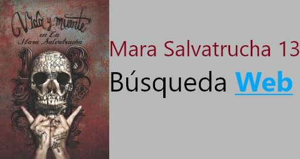

🔍 3 Resultos de Mara Salvatrucha miembros importantes
El Narrador
El narrador es anónimo, por que el se cometió muchos crímenes como asesinato de múltiples personas, que incluye
su novia, Analía.
El narrador mató múltiples personas para su pandilla, Mara Salvatrucha 13. Muchos de los víctimas de los
tiroteos son miembros de una orto pandilla, la Calle 18.
Desafortunado, la pandilla se abandonó el narrador cuando la policía llegó, y él se fue al cárcel. El lleva ropa
en la cárcel, y va a pasar toda del tiempo de su vida en la cárcel por sus crímenes.
Es problamente que él narrador va a estos citas:
- LA car rentals
porque cuando una persona esta en una pandilla, la persona necessita
cambiar coches muchos veces. Él no quiere que otros supieran que el es en la pandilla MS-13, por que hay
otros pandillas como la Calle 18 que mataron miembros de MS-13.
- WhatsApp porque WhatsApp es un sita encrypted, y él necesito hablar
con otro personas en la pandilla. Tambíen porque él ayudas correr la pandilla, el necesita WhatsApp mucho.
Esto reveló que el narrador comunicarse con otros pandilleros.
- LA library porque el le gusta libros, y él está en la área de Los
Ángeles. Entonces, él probablemente ver que libros estan en biblioteca, antes de irse. Esto dice que él es
muy inteligente, y tambien plana antes de tomar sus decisiones.
- Audible.comEl le gusta libros, porque él escribió un
libro, y el le gusta
escucha libros cuando el robo personas. Sospechamos que el leyó muchos libros o escucho estos, por que
el convirtió a un autor.
- code.org Porque el quieres un otro opcion cuando el no estas en la
pandilla nunca mas. Esto reveló que él no está totalmente preocupado en la pandilla, y está buscando un
salida desde MS-13.
Gustavo
Gustavo estaba el amigo mejor de el padre de el narrador. Ellos eran tan buenos amigos, ellos entraron los
estados unidos desde El Salvador juntos para una vida mejor. Pero cuando los padres de el narrador no están con
el narrador, Gustavo intervino para cuidar al narrador. Gustavo trató el narrador en la pandilla, y el convence
el narrador a matar los personas que mato la madre de el narrador.
- NationalGangCenter.gov él puede ver que pandillas el gobierno
está busca para. Esto puede ser una advertencia cuando el gobierno quiere parar las operaciones de MS13, y
esto dice que él sabe como escapar la policia.
- F street dispensary él puede tracar la industría de los drogas, y ver
los precios de estos
para vender drogas y ganar mucho dinero. Esto dice que Gustavo es un persona que comete crímenes
organizados, y trabajo con otros personas malas.
- Tumblr es un sito de web que hay muchos niños inseguros, y Gustavo puede
reclutar
los niños a la Mara Salvatrucha 13. Esto dice que Gustavo aprovecha a los personas débiles. Que mal persona!
- Discord Es un sitio de web que dondé los personas pueden comunicarse
sobre
acciones de la pandilla, y hablar de sus crímenes en privado. Esto dice que Gustavo tiene mediciones en
contra a la policía.
- CNN El puede ver las noticias sobre la vida de las ciudades, para escuchar
que las residencias de la ciudad están pensando en. Esto dice que Gustavo sabe que las personas tienen miedo
en, y es informacion fuerte para convencer al público a dar dinero a Mara Salvatrucha 13, y reclutar
miembros.
Analía
Ella es una persona buena, y la novia de el narrador. Ella ayuda al narrador a convertirse en una mejor persona.
Pero cuando el narrador no quieres estar en la pandilla nunca más porque el quieres estar con Analía mas, ahi
muchos problemas porque él no estaba haciendo su trabajo. En el fin de la estoria, ella murió cuando ella estaba
en la fuego cruzado entre Mara Salvatrucha 13 y una otra pandilla, la Calle 18.
- Ella probablemente usa la sita de https://bonk.io porque Bonk es un juego divertirse, y ellas es una persona quien le gusta divertirse cosas. Esto dice que ella es una persona normal.
- Ella probablemente usa https://youtube.com porque Youtube es una cita normal, y ella necesita relajarse como todos personas normales del mundo
- Ella probablemente usa https://twitter.com - Porque Analía es una persona normal, y Twitter es una cita para personas normales.
- Ella probablemente usa dog photos porque ella es una persona simpatica, y ella le gusta animales.
- Ella probablemente usa 28 things that make a great person porque ella es una buena persona, y la sita es para personas buenas.
Hay un tema entre el cinco citas: ella es una persona normal, que solo quiere un mundo mejor ayudando personas débiles,
como su mama.